Website Design
ROLE
UX Designer
TOOLS
Illustrator, Invision
TIMELINE
3 Weeks
Daily scrum standups, weekly client check-ins, final pitch presentation
DELIVERABLES
- User research
- Market analysis
- SWOT analysis
- Site map
- Task flows
- Mid-fidelity wireframes
- Interactive website prototype
- Usability testing
BACKGROUND
Only 25% of U.S. public high school graduates have the skills needed to succeed academically in college. In a November 2015 mock project, DESIGNATION wanted an online platform that would help students improve their chances for success in college.
CHALLENGE
In a team of 2 UX and 2 UI Designers without any funding, we were tasked with creating an online platform that would help them discover interests, prepare for college, and create a joy of learning.
Week 1 | Research & Synthesis
RESEARCH
We started with a discovery phase to understand the college-readiness domain, empathize with players in the high school space, and learn about the competitive market, before formulating which problem and for whom we would solve.
- Goals
- Identify what skills are necessary for students to succeed in college and what factors impact a student’s educational achievements
- Identify what learning platforms are currently available to help high school students
- Methods
- Domain Analysis
- User Interviews
- Subject Matter Expert Interviews
- Market Research
- SWOT Analysis
As a base for understanding this domain, I searched online for publications and surveys to familiarize the team with national college-readiness standards and the rates of high school student preparedness.
DOMAIN INSIGHTS
- Standard college-readiness guidelines are based purely academics
- Less than half of high school students felt positively about their college and career readiness
- High schools prepare students more for college than for careers they want
User and Subject Matter Expert Interviews
With this background, we were able to conduct semi-structured interviews with students to empathize with their motivations and pain points about post-high school plans. In total, there were interviews from 17 students and 8 educators (ex: high school teachers, college professors, and guidance counselors). I conducted 3 student interviews remotely, utilizing a beginner’s mindset to encourage them with open-ended prompts.

- Sample Interview Questions:
- Can you walk me through your school day?
- What are your plans after high school?
- What does being “college-ready” mean to you?
- What do you want to study when you get to college?
USER INSIGHTS
- Students rate colleges based on major (which is based on career-choice), rank, and reputation
- The most challenging part of preparing for college is figuring out what you want to do or what you want to be
- Students who knew what they wanted to be learned it through a trip, relative, or friend
EDUCATOR INSIGHTS
- Educators believed strongly that college readiness went beyond just academics, and that students needed better expectations of what the real world would be like
Market Analysis
Understanding how interrelated choosing a career was with preparing for college, we wanted to see what resources were out there already to help. I analyzed the competitive market of career exploration websites by first looking into ones that students had mentioned in interviews and then considering others that catered to high school students.
SWOT Analysis
Strategy is always at the back of my mind so I paid close attention to competitor feature sets such as the career search functionality, site information/content, and the personal assessment process. Combining it with our UI designers’ visual competitor analysis, were were able to collectively strategize about market positioning with a SWOT analysis.
SYNTHESIS
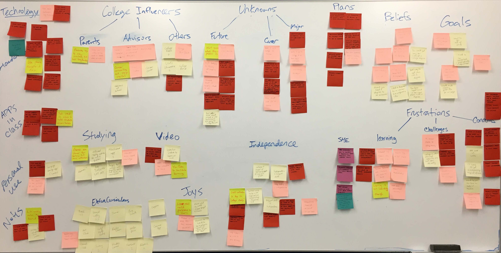KEY RESEARCH TAKEAWAYS
- Students viewed college as preparation for a career and an investment towards their future and associate a college major with their future career choice
- They feel unprepared for college if they haven't yet decided on a career path
- Career exploration pain points:
- There isn’t a central resource to find clear and concise career information
- It’s hard to know what a professional actually does: the day-to-day
- Students prefer individualized information
We synthesized our research as a team, which helped us each reflect and get on the same page to make sense of our data. From this, we defined our user types and product vision by creating personas and design principles.
User Personas
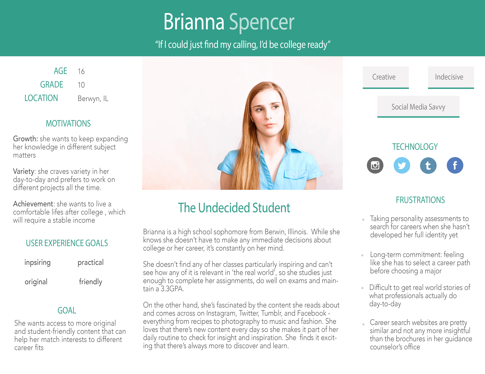 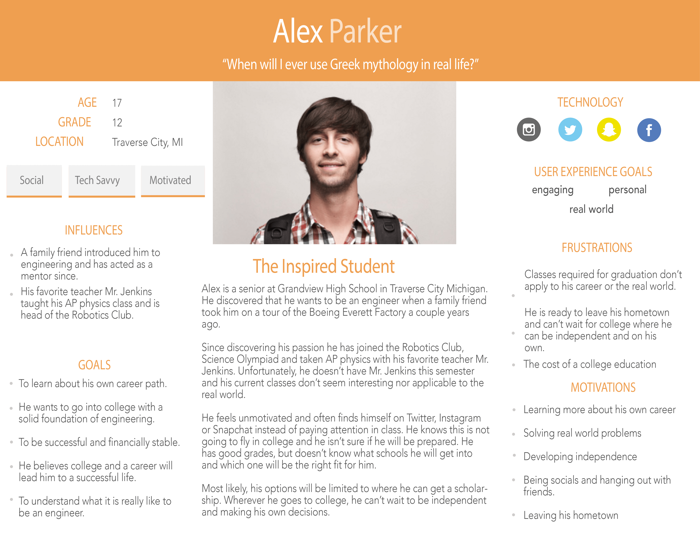I wrote a persona for Brianna Spencer, representing students who didn’t know what they wanted to pursue as a career. She hadn’t decided on a college, or chosen a major yet.
Our other user type was represented by Alex Parker, he knew where to go and what to study, but was still seeking information on his career choice.
Problem Definition
Many high school students associate college as preparation for a career and feel unprepared for college if they haven’t decided on a career path. Students need an easy-to-use platform to access career information and real-world advice that helps them translate interests into a career.
Week 2 | Ideation
As a team, we agreed on designing for web-first based on student interview data revealing that they mainly do college and career research using a laptop.
Journey Maps
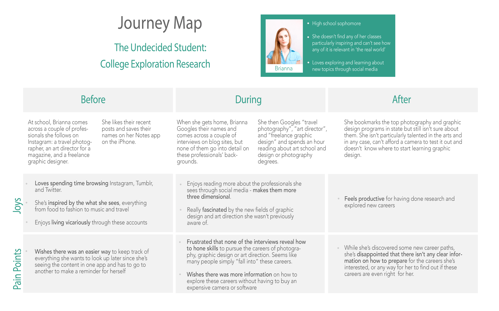
To brainstorm concepts, we created current journey maps to understand the needs, interactions, and emotions of users and how they would interact with our product.
For my concept, I wanted to:
- address students’ dilemma of not knowing what career to choose
- offer a strengths-based assessment to get suggestions, and
- allow an inside scoop on different careers from real world professionals
I browsed through inspirational websites with career information to understand the information architecture, visual identity, and user flow of similar sites-helping me brainstorm ways of how the content and navigation should look for my site.
Sketching
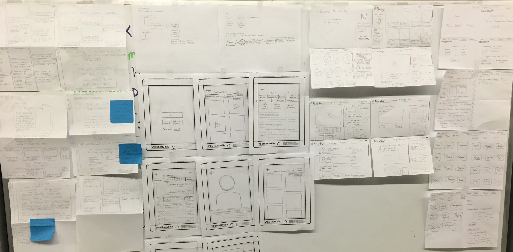(from left to right)
- Wireframe 1
- News feed of college and career articles
- Wireframe 2
- Career search site based on interest
- Ability to see college offering that career’s major
- Speak virtually with professionals
- Wireframe 3
- Receive career suggestions based on interest quiz
- Participate in career challenges based on profession
- Receive expert feedback from professionals
- Wireframe 4 (mine)
- Get career suggestions based on strengths quest assessment
- Read career stories from professionals
- Message professionals with questions
Paper Prototype
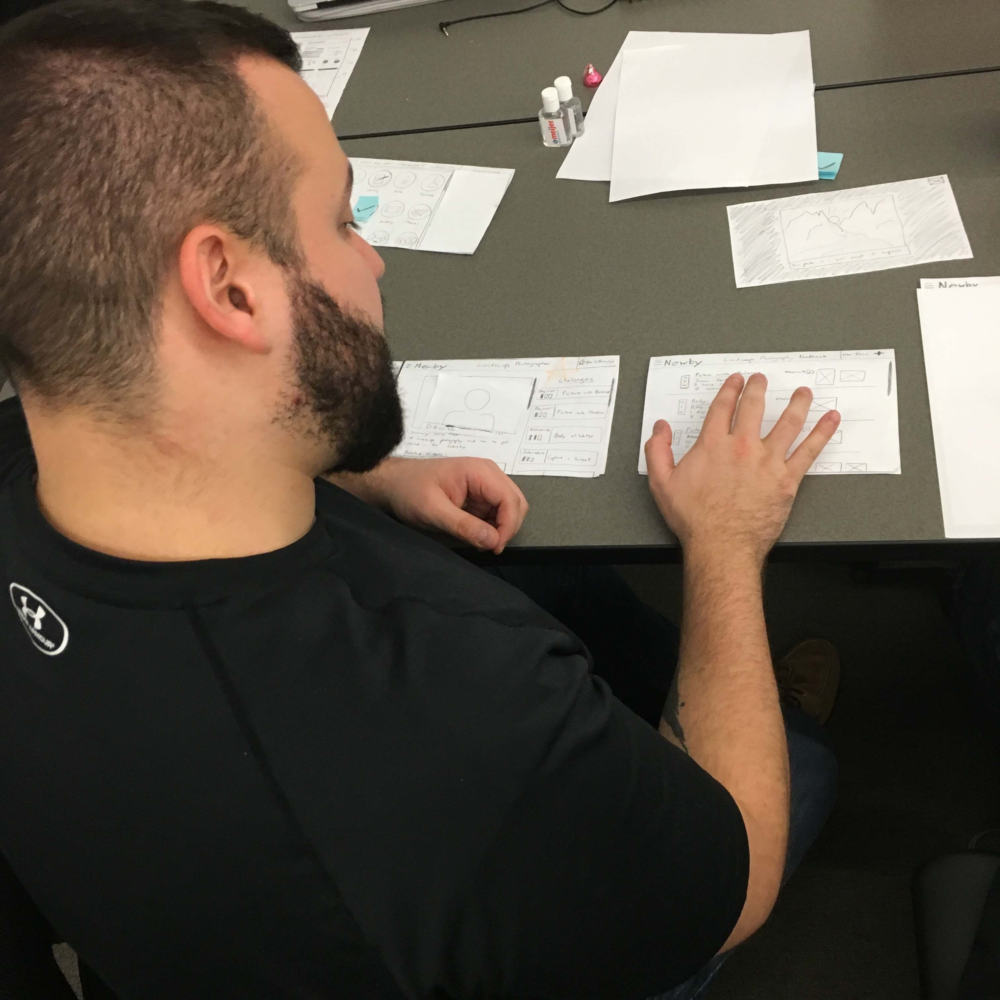After checking in with our client, we decided to pursue the last 3 of the wireframed concepts based on how the in-depth career resources could solve our users’ problem. We utilized our design peers for a quick evaluation of heuristic usability with paper prototypes before bringing them into Illustrator and then Invision.
Low Fidelity Wireframes(my concept)
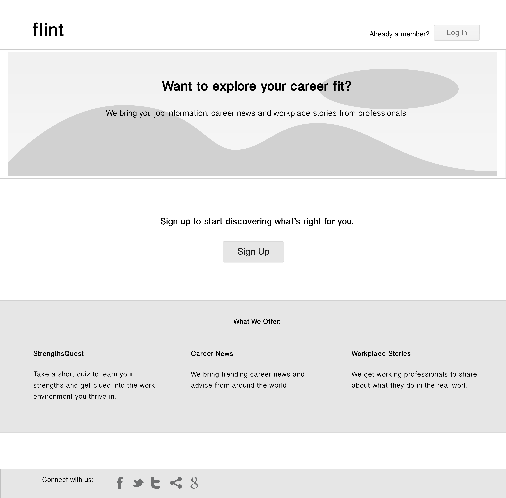
 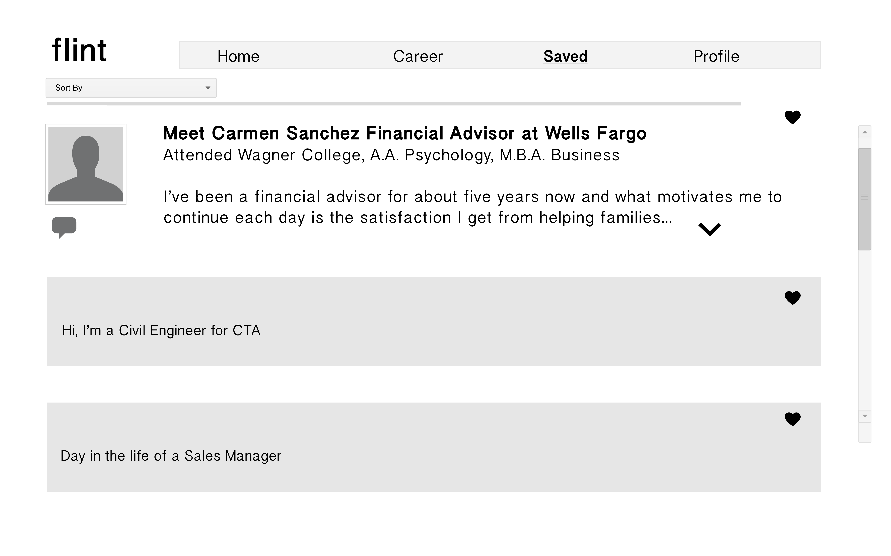
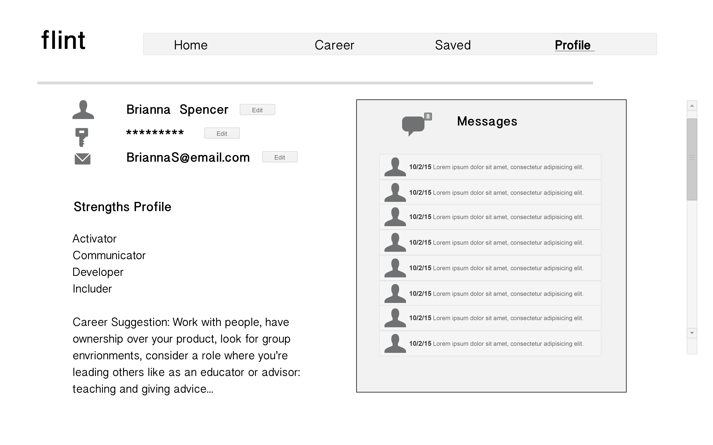
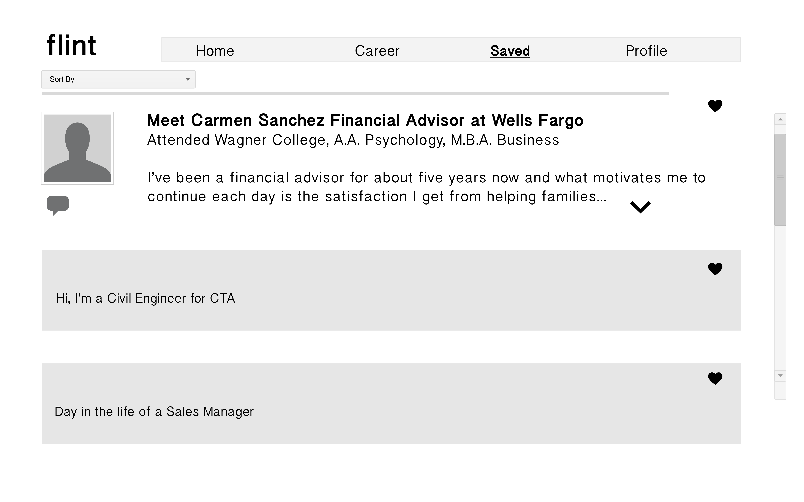
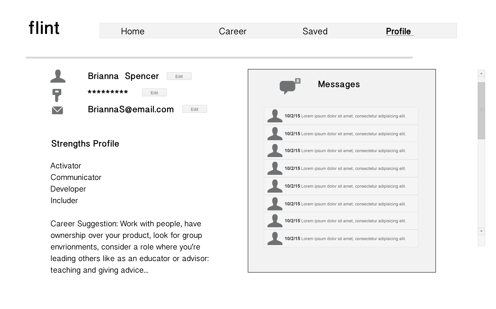
After checking in with our client, we decided to pursue the last 3 of the wireframed concepts based on how the in-depth career resources could solve our users’ problem. We utilized our design peers for a quick evaluation of heuristic usability with paper prototypes before bringing them into Illustrator and then Invision.
Concept Validation
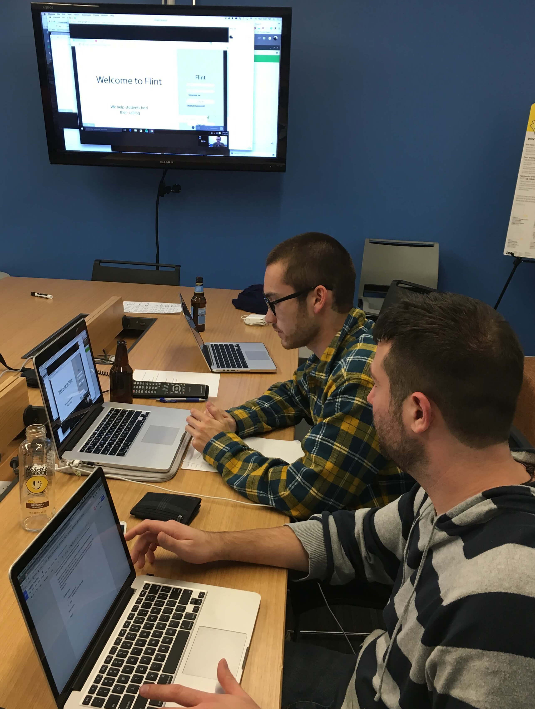We remotely tested high school students for concept validation and user feedback. While the response was unanimously positive for our 3 different prototypes, we did get helpful insights into the enhancements we would make for our final product.
USABILITY INSIGHTS
- Students
- wanted to have access to college information while searching for careers
- liked receiving career suggestions based on their interests rather than take quizzes or do challenges
- enjoyed having the option of saving their past search results
- were interested in the webinar feature to learn from professionals in the field
Week 3 | Iteration & Refinement
As UX designers, we focused on combining well-tested features from our concepts into one solution. Then, we worked with the UI designers to transition our final wireframes into high-fidelity screens to ensure that all of our design decisions were conscious of users’ needs.
OUTCOME
Our website concept helps students relate to a resource where they can explore and learn about their career interests. It brings real-life stories to the students and allows them to build their portfolio overtime. In this way, students can tackle the issue of feeling ready for college independently and at their own pace.
Features
- Career search based on interest or browse by field
- Information on career, how to prepare, and where to study
- Save careers, recorded hangouts and colleges
- Google hangouts with real-world professionals
We brought our final prototype in front of high school students again for testing and received an overwhelmingly positive response from students.
User Feedback
- “It’s incredibly helpful, would for sure use it”
- “I think this really covers everything, it’s a single site [where] you look at your pace and everything and everywhere you want to go just on one page”
- “I like it more [than PSAT] because it gives me information faster, it’s instant gratification”
- “I really need a site like this, because it is hard to find information on careers”
- “So, when will this be available because I need it now?”
Future Considerations
- Expand the college search section
- Develop a mobile app
Next Steps
With the overwhelmingly positive response from students, I’d love to continue building functionality into the website and adding to the available content. With a mobile app, we could even put the career news feed idea that we had to eliminate back on there and make our concept work across platforms.
Personal Reflection
Going into this project, I had firsthand experience with designing college-readiness programming in the physical space and was excited to be tasked with designing a digital product for the same cause. I made sure to assume a beginner’s mindset and used this opportunity to truly shift perspectives, take my bias out of the design process, and make sure I was designing for the user. This experience solidified my focus on channeling key insights based on research data into my user-centered design process.